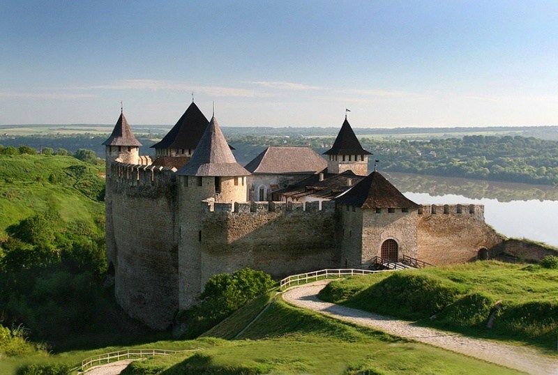

Хотинська фортеця – свідок численних війн та баталій. Протягом багатьох століть вона була центром розвитку ремесел і торгівлі, культури та економіки. Ця середньовічна красуня може багато розповісти і показати тому, хто побажає її вислухати...
Не випадково скелястий мис над Дністром наші предки називали „Хотінь”. Назва міста походить від дієслова „хотіти”, оскільки мис був бажаним та надійним місцем для давніх поселенців.
Археологічні дослідження поблизу Хотинської фортеці виявили на площі 20 га рештки жител кінця X – початку XI ст., що дало підстави науковцям твердити про існування на цій території значного поселення часів Київської Русі. Воно розвивалося як місто, на що вказує, зокрема, скарб брактеатів (односторонні тонкі срібні монети), закопаний близько 1230 р. Науковці вважають, що в той час місто могло існувати лише під захистом фортеці, що була розташована, ймовірно, на місці нинішньої.
Завдяки міцній твердині і вигідному розташуванню, Хотин став центром розвитку ремесел і торгівлі, які, в свою чергу, сприяли розквіту культури та економіки міста. Місто було важливим пунктом в європейсько-азійській торгівлі.
Розташований на основних транспортних магістралях, Хотин завжди привертав увагу завойовників. З метою захисту від них була споруджена фортеця, яка пережила століття і бачила під своїми мурами полчища воїнів Османської імперії, повстанців Мухи, народних месників Дитинки, вояків Дмитра Вишневецького (Байди), Петра Дорошенка. Під час визвольної війни українського народу проти польської шляхти у Хотин двічі вступали війська Богдана Хмельницького.
Відома Хотинська фортеця і подіями Хотинської війни, яка проходила біля стін фортеці у вересні – на початку жовтня 1621 р. Ця війна прославила запорозьких козаків та їхнього гетьмана Петра Конашевича-Сагайдачного і стала переломним моментом в історії Османської імперії. Перемога під Хотином врятувала Західну Європу від вторгнення яничар, справила сильне враження на всі народи і знайшла свій відголос у світовій літературі. Однак, Хотинська битва виявилася для Петра Сагайдачного останньою: внаслідок тяжкого поранення він серйозно захворів і 10 квітня 1622 р. пішов з життя.
Упродовж XVII ст. Хотин переходив з рук у руки, ним володіли і польські королі, і турецькі феодали, неодноразово місто визволяли запорозькі козаки. Під час визвольної війни у Хотині 1650–1653 рр. перебували війська Богдана Хмельницького. Тільки на початку XVIII ст. туркам вдалося остаточно закріпитися в Хотині і в фортеці. Після реконструкції 1712–1718 рр. (за допомогою французьких інженерів) вона стала наймогутнішим вузлом османської оборони на сході Європи.
Хоча в ХVIII–ХІХ ст. фортеця поступово втрачала своє оборонне значення, під її мурами продовжували кипіти битви. У 1826 р. місту Хотину був наданий герб: на золотому фоні – срібна тривежева цитадель, – вгорі якої – срібний хрест над двома схрещеними шаблями – символами захисту краю від ворогів. На передній вежі – півмісяць на держаку, а на держаках крайніх веж – застромлені бунчуки.
У Хотинській фортеці проводилися зйомки багатьох художніх фільмів, серед яких „Гадюка”, „Захар Беркут”, „Балада про доблесного лицаря Айвенго”, „Три мушкетери”, „Чорна стріла”, „Стара фортеця”, „Стріли Робін Гуда”. Серед недавніх – екранізація твору відомого українського письменника Юрія Мушкетика „Яса” та зйомки кінострічки ”Запорозька Січ” за повістю Миколи Гоголя „Тарас Бульба”.